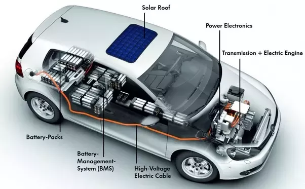

Electric vehicles are gaining popularity worldwide as more and more people are becoming aware of the
benefits of sustainable transportation. With the rise of electric vehicles, there is also an increase in the
need for research and development in this sector. EV projects are an excellent way for engineering
students to gain practical knowledge and experience in their field of interest.

CubeSat Constellation for Earth Observation
The CubeSat Constellation for Earth Observation project aims to revolutionize our ability to monitor and understand Earth's dynamic systems using a network of small, low-cost satellites known as CubeSats. These CubeSats, each equipped with advanced imaging sensors and communication systems, will work together in a coordinated constellation to provide high-resolution imagery and real-time data on various aspects of Earth's surface and atmosphere.
Smart Irrigation System : Technological Advancements
The Smart Irrigation Management System project aims to revolutionize traditional irrigation practices by incorporating advanced technologies such as sensors, actuators, data analytics, and machine learning algorithms to optimize water usage in agriculture while maximizing crop yield and quality.
Online Learning Platform Enhancement
The Online Learning Platform Enhancement project focuses on enriching the capabilities of online learning platforms to deliver high-quality and engaging educational experiences for students, educators, and administrators alike. By integrating advanced features and functionalities, these platforms aim to facilitate effective remote and blended learning environments that foster collaboration, interaction, and personalized learning opportunities

 2023-2024
2023-2024